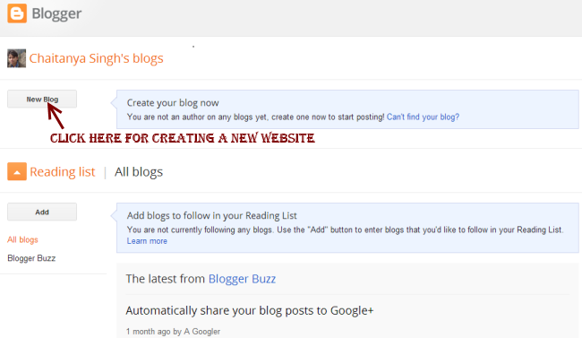

This guide will help you to create a free website on blogspot, you need not to buy domain and hosting services. Blogspot is a platform which allows you to build and host website for free, it owns by Google so you do not have to worry about server down time and other issues. Moreover, there are thousands of free blogger templates which you can use to give a professional look to your website. Let’s start with step by step guide for creating a website for free.
Step 1: Login to Blogger
Go to http://www.blogger.com/home and sign in with your gmail id and password, if you don’t have an account then you can create it for free by click the “sign up” button at the top right corner as shown in the below screenshot. Blogger belongs to Google that’s the reason you would be needing an gmail account for building a website on blogspot.
Step 2: Confirm your profile
Once you are done with logging in with your gmail credentials, you will be seeing a screen like the below one. Click on “Continue to Blogger“.
Step 3: Create a New Blog
It’s time to create a new website, click on New Blog button.

Step 4: Provide Website’s domain name and title
In this step, you would need to provide the title and address of your website. For example: If you want to build a website on books then the Address (It’s also known as Domain name and site’s URL) could be bestbooks.blogspot.com or itbooks.blogspot.com and the title can be Best IT Books Blog. You must know that since these domain names are free, they would be suffixed with blogspot.com by default. Blogspot, also provides us the option of having custom domain names and we would see how to add custom domain names in this guide later.
The domain name must be unique so there are chances that the domain name you wanna choose is already registered. In that case you must need to try a different domain name until unless the blue tick gets appeared at the right side of Address field as shown below.
Once it’s done, choose a template (you can choose any template at this point, you would be able to change it later at any point of time, we will show you how to do that) and click Create Blog!

Step 5: Start Blogging
By completing till step 4, you successfully own a website for free. Now, you can start posting posts/articles, click on start blogging!
Step 6: Visit your website
Give your website’s address in the browser and press enter. You would be presented with a website, which you own!!. Initially, you may not like the look and layout but we have not yet finished the tutorial, we will show you every single way to tweak your website, in order to make it look good and professional.
Publish a post/article on blogspot website
Since you have successfully create a website on blogspot, you can now start posting articles on your new website. Refer the below screenshot. Write content, title and hit Publish to publish the post.
When you click publish, it would ask you to share the content on Google+, you may wish to do so as it would become a good source of traffic to your newly created website.

Set the desired permalink structure in Blogspot?
You may be wondering what is permalink – It’s a link (Address, which you enter in browser to view your posts) to your post/article
There are two options available when you write a post.
Automatic permalink: Blogger would automatically generate the permalink for the current post, based on the title provided in the title section.
Custom Permalink: Choose custom permalink in sidebar as shown in the below screenshot and provide the value. Lowers cases words with hyphen(-) in between are the best choices.
Change the look of your website
You may want to change the look of your website, you can easily do so by changing the template of the website. Click on template, like I did below
You would be presented with a collection of templates. Choose the one, which you like, click on the apply the template button, provided below each of the template in library. Alternatively, there are many websites from where you can download the popular and good looking website’s template for free. We will share some of those website’s in next section.
Download existing template backup and upload new template to blogger
Go to My blogs » Template, you would find a Backup/Restore button, click on it as shown in the below snapshot. In the next screen it would ask you to browse new template or you can download the existing template to the local machine.
find free templates outside Blogger: If you do not find a suitable website’s template in Bloggers library then you can get the free templates from the site – http://btemplates.com/, alternatively you can yourself find free blogspot templates by searching “free bloggers template” on Google. Select the template and download zip file from the website. Extract the zip file, in the extract folder you will find a XML file, this is the file you would be needing while uploading the template to Blogspot.
Upload new template –
When you have clicked on the backup/restore button as shown in above picture, you would get below screen. From here, you can download the backup of existing template and for uploading new template, browse the XML file and click Upload. It may ask you for widgets, click on Keep Widgets.
Change the look of navigation bar
Go to layout section from sidebar and click on edit in Navbar section. Select the look and style you require and hit save!
Add Favicon to your website
Favicon is a tiny image which you can see at the browser’s tab while opening a particular website. In order to change the default blogspot’s favicon do follow the below steps –
Layout » Edit Favicon
Choose a square image of size less than 100 KB and upload it.
Whenever you do any change in the layout section, do not forget to save arrangement.
Add Gadget to your website
You can add Gadgets to the blog’s sidebar, below navigation menu and in footers. Whenever you click on Add a Gadget button in layout section, a popup window would come up where you can browse and add gadgets. Don’t forget to save the settings.
Switch to a Custom domain
Above we have seen how we choose to have a free blogspot domain which was suffixed with blogspot keyword, however if you wish you can purchase a custom domain of your choice and can add it in Settings » Basic. Click on Add a custom domain and give the domain name you have bought.
Traffic stats for your website
Stats » Overview
Real time traffic status for your website. It would show you the traffic sources, audiences and many more details. Here, you can find out what all posts/articles/pages are getting most of the traffic and for which keywords. This will help you to boost organic traffic to your website.
Custom Robots.txt
If you are a newbie then this may be pretty new thing to you!! robots.txt is a file which is referred by search engine. For now, I’m not gonna make you confuse. I’m just covering this up here to let know the place where you can edit your robots.txt file If required.
Edit HTML
You are allowed to edit your existing template by going to Template » Edit HTML Section. You can also include scripts in header and footer section if you wish to do so.
Earn Money from the website
Now everything is setup perfectly. You can start blogging and once you start getting decent amount of traffic to your website, you can apply for adsense right away from your blogspot dashboard.
Sidebar – Earnings » Adsense
Final Words
That’s all for now, let us know if you have any questions regarding this. Do share you thoughts by dropping a comment below. I’m sure you would be able to create a website for free by following up the above step by step guide, I wish you luck for your new website. If you like the tutorial do share it with your friends on Facebook, Google+ and twitter.
Nice info in detail with clear images. Can you provide some information about how to convert .blogspot to .com (custom domain). Waiting for your reply.. :)
Thanks.
javabynataraj.blogspot.com